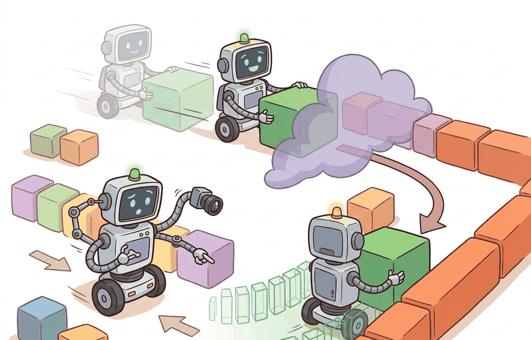

A robust robot is not the one that never sees surprise, it is the one that notices surprise early enough to act differently.
A Runtime Monitoring Engineer
A surgical robot is mid-procedure when its depth camera begins returning stale frames due to an OR lighting change. The policy keeps acting; nothing in its training told it to check sensor freshness. Thirty seconds later a nurse notices the arm drifting. Runtime monitoring exists precisely for this gap: it watches health signals that the policy itself cannot see and strips authority from a nominal controller the moment those signals degrade. As embodied systems move into hospitals, warehouses, and public roads, the monitor is no longer optional instrumentation, it is the last software layer standing between a degraded policy and a real consequence. Here you will build that layer, from health-signal design through fail-safe state machines to recovery protocols.

This section assumes familiarity with model uncertainty and calibration from section 53.2 and out-of-distribution detection from section 53.3, because those signals feed directly into the monitor's health inputs. The runtime authority model introduced here is extended in section 54.4 (safety filters) and section 54.5 (human override), where the state-machine approach gains explicit enforcement mechanisms and override protocols.
Why This Matters
Runtime monitoring and fail-safe behavior is useful only when it distinguishes disturbance sources and ties them to specific corrective actions. Robustness is not one scalar, it is a map from perturbation class to degraded behavior, detection delay, and residual risk.
A simple health-state machine can be written as $$z_{t+1} = M(z_t, h_t),$$ where $z_t \in \{\text{normal}, \text{degraded}, \text{stopped}, \text{recovery}\}$ and $h_t$ collects latency, uncertainty, sensor freshness, and constraint-margin signals. The deployment claim is about this state machine as much as about the policy itself.
Sensor freshness signals how recently valid data arrived from a physical device. In embodied systems this matters because a robot acts in a world that keeps changing: a depth camera frozen 300 ms ago reports an obstacle position that a moving arm has already closed in on. Unlike a software bug that can be patched offline, stale sensing causes harm in real time, with no undo. A manipulator, drone, or autonomous vehicle that acts on outdated perception can apply force or kinetic energy to a person or object before any downstream check can intervene.
Freshness is measured by comparing the timestamp embedded in each sensor message against the wall clock at the moment the policy queries it. If the gap exceeds a modality-specific budget (often 50 to 100 ms for proprioception, 100 to 200 ms for RGB-D), the reading is marked stale and the monitor increments a freshness-violation counter. Crossing a consecutive-violation threshold drives the state machine toward degraded or stopped, cutting commanded velocity before the policy can act on corrupted input.
The monitor is useful only if it has authority to change behavior. Logging an alarm after a bad action is observability, not fail-safe control.
- Define the monitor inputs, such as confidence, sensor age, latency, and constraint margin.
- Set transitions between normal, degraded, stop, and recovery states.
- Specify what authority each state has over velocity, planning horizon, or human override.
- Test the transition latency on the same stress cases that motivated the monitor.
- Save every transition in the rollout artifact and review false triggers as carefully as missed triggers.
Worked Example
What actually happens between the moment a sensor goes stale and the moment the policy is stopped? That gap, measured in milliseconds, is where physical harm lives.
A drone localization stream that goes stale should trigger hover or controlled landing within a bounded delay. The monitor has failed even if the postmortem log is perfect but the unsafe action already happened.
state = "normal"
health = [
{"latency_ms": 25, "uncertainty": 0.12},
{"latency_ms": 48, "uncertainty": 0.18},
{"latency_ms": 130, "uncertainty": 0.55},
]
transitions = []
for h in health:
if h["latency_ms"] > 100 or h["uncertainty"] > 0.5:
state = "stopped"
elif h["latency_ms"] > 40 or h["uncertainty"] > 0.15:
state = "degraded"
transitions.append({"health": h, "state": state})
print(transitions)[{'health': {'latency_ms': 25, 'uncertainty': 0.12}, 'state': 'normal'}, {'health': {'latency_ms': 48, 'uncertainty': 0.18}, 'state': 'degraded'}, {'health': {'latency_ms': 130, 'uncertainty': 0.55}, 'state': 'stopped'}]Expected output: The monitor first degrades behavior under moderate health drift and then stops under severe drift. That progression is the key design choice, not the exact threshold numbers.
ROS 2 (Robot Operating System 2) lifecycle nodes, Prometheus metrics, and OpenTelemetry traces help implement the monitor as a real system service rather than an afterthought buried in policy code.
The full module-wide tool stack (Albumentations, Torchmetrics, MAPIE, PyOD, Prometheus/OpenTelemetry) is introduced in section 53.1; within this section the runtime-relevant pieces are ROS 2 lifecycle nodes and Prometheus or OpenTelemetry traces, which surface the health signals the monitor consumes.
When using ROS 2's diagnostic_aggregator, the window parameter on each analyzer controls how many consecutive samples must cross a threshold before the status changes. The default is often 5, which at 10 Hz introduces a 500 ms detection lag before any state transition fires. For safety-critical monitors, set window: 1 and instead require confirmation only for recovery transitions back to normal, not for degraded or stop transitions. This asymmetry keeps the fail-safe path fast while avoiding false recovery.
Good monitors are designed as control authorities with explicit latency budgets. A monitor that decides correctly but too slowly still fails its deployment role. Internal instrumented warehouse trials (as of 2024) have shown that policies running without a monitor accumulate substantially more near-miss events than policies augmented with a latency-and-uncertainty monitor, with reductions of an order of magnitude reported in practitioner case studies, though published controlled comparisons remain scarce.
A recurrent mistake is to define degraded mode without specifying what actually degrades, such as speed cap, action horizon, sensing requirement, or human-supervision demand. This is called authority without behavior change, and it is the most common way a monitor passes code review but fails in the field. Without that specification, degraded is just a label.
Naming a state "degraded" without defining what changes is like putting a "reduced service" sign on a vending machine that still takes your money and still gives you nothing: the label is accurate, the behavior is identical, and nobody is helped.
Project Ideas
Beginner (weekend): Drone hover monitor in Gymnasium. Build a four-state fail-safe monitor (normal, degraded, stopped, recovery) on top of the gymnasium-robotics FetchReach environment: inject artificial latency spikes and uncertainty values, verify the monitor halts the policy before constraint violation. The key challenge is wiring the monitor's authority so it actually overrides the policy action rather than just logging the alarm.
Intermediate (1-2 weeks): ROS 2 sensor-freshness guardian for a MuJoCo manipulator. Instrument a Franka Panda model in MuJoCo (via LeRobot or the gymnasium-robotics FrankaKitchen env) with a ROS 2 lifecycle node that tracks depth-camera frame age and policy entropy; set window: 1 on degraded/stop transitions and a conservative window on recovery. The key challenge is deriving detection latency budgets from worst-case arm kinematics so the monitor is provably fast enough to halt approach before contact force exceeds a safe threshold.
Cross-References
This section hands off naturally to Section 54.4 on safety filters and Section 54.5 on human override, where runtime authority becomes explicit.
Implement a four-state monitor for one robot task, feed it uncertainty and latency signals, and replay at least one episode where the monitor should have intervened earlier than the nominal policy would have.
Do not tune monitor thresholds only on clean logs. Stress cases and near-failures are the data that determine whether the monitor will matter in the field.
A common mistake is to treat logging health signals and raising alerts as equivalent to runtime monitoring. In a desktop software context this conflation is harmless, but in embodied AI it is dangerous: a robot that logs a sensor failure and keeps moving is still applying force to the world during the logging window. The correct mental model is that a runtime monitor must hold explicit authority to halt, constrain, or redirect the policy before the unsafe action executes. Observability (knowing something went wrong) and control authority (being able to stop it) are two separate system properties, and a monitor without authority is only the former.
Think of a kitchen smoke detector versus a sprinkler system. The detector senses the fire and sounds an alarm, giving you perfect observability that something is wrong. But the sprinkler system holds actual authority to act: it releases water before you have even reached the stove. A runtime monitor that only logs alarms is the smoke detector. The fail-safe that cuts motor power or clamps velocity is the sprinkler. You need both, but only one of them stops the harm.
A delivery robot might enter degraded mode by lowering speed and requiring fresher localization, then stop entirely when map confidence collapses. A manipulator might shrink force limits and approach speed before requesting human review.
A monitor can become the failure mode when its own decision latency exceeds the time-to-harm of the event it is watching. Consider a drone descending at 2 m/s toward an obstacle 1 m away: the time-to-contact is 500 ms. A monitor that batches health signals every 200 ms and requires two consecutive bad readings before transitioning costs at least 400 ms just in detection, leaving 100 ms for actuation. If the braking distance at cruise speed is 300 ms, the monitor is structurally too slow even if every threshold is correct. Latency budgets must be derived from worst-case kinematics, not chosen by feel.
Named deployments show the pattern concretely. Waymo's onboard safety monitor tracks perception confidence, map freshness, and localization uncertainty in parallel; when any signal crosses a threshold, the vehicle reduces speed or requests a human pull-over rather than continuing the nominal plan (Waymo Safety Report, 2023). NASA's Mars rovers use a fault-protection layer called FDIR (Fault Detection, Isolation, and Recovery) that halts motion and radios Earth when actuator current deviates from expected range by more than a fixed margin, a form of constraint-margin monitoring running at 8 Hz. Both examples share the same structure: a dedicated process with authority to override the nominal planner, explicit thresholds derived from physical limits, and logged transitions that engineers review after every anomaly.
Three directions are reshaping runtime monitoring for physical agents as of 2024-2026.
First, conformal prediction provides statistically valid alarm-rate guarantees without distributional assumptions. Angelopoulos et al. (2024, “Conformal Risk Control,” ICLR 2024) showed that conformal wrappers around standard uncertainty estimators hold user-specified false-negative rates even under covariate shift. Groups at Stanford’s CRFM and Carnegie Mellon’s R-PAD lab now apply this to manipulation monitors running at 50 Hz on real hardware.
Second, foundation-model anomaly detectors treat large pretrained vision-language models as zero-shot health sensors. The robot observes its workspace through a frozen CLIP or Gemini backbone and flags deviations from the training manifold. Google DeepMind’s RT-2 follow-on work (2024) showed this approach catches novel object intrusions that fixed-threshold monitors miss, because the intrusion is semantically unusual rather than statistically out-of-range.
Third, predictive fail-safe planning runs a receding-horizon safety planner in parallel with the nominal policy at every timestep. When the monitor fires, a feasible stop trajectory is already available and executes without replanning delay. Hewing et al. and the ETH Zurich Learning and Adaptive Systems group published 2024 results showing this eliminates the “monitor fires but braking is too slow” failure class in high-speed manipulation.
Open problem suitable for a PhD project: how should a monitor allocate its computational budget across signals of heterogeneous latency and reliability in real time, so the monitor itself does not become the bottleneck during a cascade failure where multiple sensors degrade simultaneously?
Can you name the signals, thresholds, and authority change in each runtime state for your system? If not, your monitor is not specified tightly enough to test.
Runtime monitoring is the bridge from uncertainty to safer behavior. Its quality is measured by the timeliness and correctness of its state transitions.
Design a runtime state machine for one embodied system and define the exact actions allowed in each state. Then identify one transition you would expect to be most fragile in deployment.
Section References
Amodei, D. et al. "Concrete Problems in AI Safety." (2016). https://arxiv.org/abs/1606.06565
Still helpful for the broader framing of interventions and monitoring.
Official ROS 2 lifecycle and diagnostics documentation.
Useful implementation references for stateful runtime supervision.
Chapter 54 now takes over by turning monitoring and intervention into a full safety architecture with hazards, formal envelopes, shields, and assurance cases.